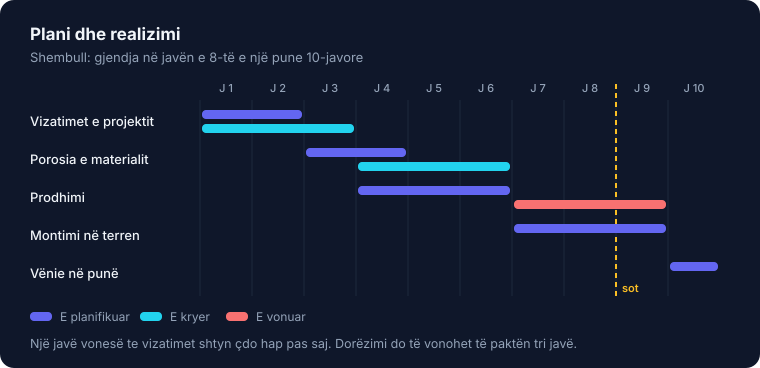
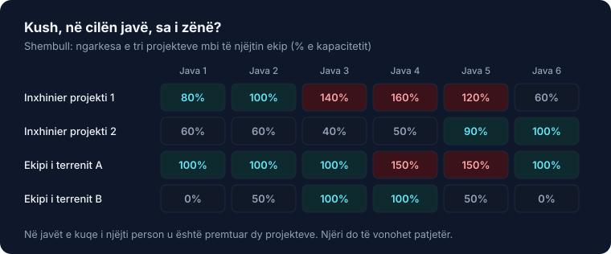

Kur duhet patjetër programi për menaxhimin e projekteve?
Te kompanitë që bëjnë punë inxhinierie, kontraktimi dhe montimi, plani i projektit shpesh përgatitet një herë, në fillim të punës. Del një grafik i bukur në Excel, tregohet në mbledhje, pastaj futet në një dosje dhe nuk hapet më. Puna megjithatë ecën, sepse drejtuesi i projektit i mban të gjitha në kokë. Kur fillojnë të ecin tri-katër punë njëherësh, kjo mënyrë e lodh edhe njeriun, edhe kompaninë.

Pse plani mbetet në sirtar?
Ta mbash të përditësuar grafikun në Excel është punë më vete. Vjen një lajm nga terreni, dikush hap skedarin, shtyn datat dhe ua dërgon të gjithëve me email versionin e ri. Pas dy javësh qarkullojnë katër versione të ndryshme dhe askush nuk e di cili është i sakti. Pas ca kohësh heq dorë edhe ai që e përditësonte.
Nga ky çast gjendja e projektit mësohet me telefon. Pyetet terreni „si jemi“, vjen përgjigjja „nesër mbaron“. E njëjta përgjigje mund të vijë tri javë rresht, sepse askund nuk shkruhet sa për qind e punës ka mbaruar.
Kjo ka pasojë edhe në anën e klientit. Kur duhet përgatitur situacioni, mundoheni të mblidhni nga dokumentet se kush sa punë ka bërë, cili material ka mbërritur në kantier, cila punë shtesë është miratuar nga klienti. Çdo dokument që mungon do të thotë se fatura shtyhet një muaj.
Si rritet një vonesë e vogël?
Në projekt punët varen nga njëra-tjetra. Kur vonohet miratimi i vizatimit, vonohet porosia e materialit; kur materiali vjen vonë, shtyhet prodhimi; kur shtyhet prodhimi, ekipi i terrenit pret kot ose dërgohet në një punë tjetër. Një javë shtyrje në fillim ju del përpara si tri-katër javë në dorëzim.

Vetë ky zinxhir është i pashmangshëm; në çdo projekt diçka shtyhet. Problemi është që shtyrja vihet re vonë. Nëse plani nuk është i përditësuar, vonesën e mësoni dy javë para datës së dorëzimit, dhe në atë pikë mund të bëni vetëm një gjë: të caktoni orë shtesë dhe t'i kërkoni klientit kohë.
I njëjti ekip, tri projekte
Në një kompani të mesme, kur shtohen projektet, ngushtica e vërtetë është te njerëzit. I njëjti inxhinier bën vizatime për tri projekte, i njëjti ekip terreni u është premtuar dy kantiereve. Çdo projekt më vete duket i arsyeshëm; kur i vini të gjitha përbri, del se në disa javë nga një njeri pritet punë për dy.

Kjo tabelë mund të mbahet në Excel, por duhet rillogaritur me dorë pas çdo ndryshimi në projekt. Askush nuk e bën. Mbivendosja kuptohet ditën kur ekipi nuk shkon dot në kantier.
Çfarë bën programi për menaxhimin e projekteve?
Në thelb e mban planin të gjallë. Punët, kohëzgjatjet dhe varësitë mes tyre futen një herë. Kur një punë vonohet, datat e punëve që varen prej saj shtyhen vetë dhe data e re e dorëzimit duket menjëherë.
Ecuria futet nga terreni. Përgjegjësi i ekipit shënon nga telefoni punën e bërë atë ditë, shton foto dhe shënon materialin që mungon. Njeriu në zyrë nuk telefonon askënd për të mësuar gjendjen.
Dokumentet mblidhen nën projektin: kontrata, versioni i fundit i vizatimeve, letërkëmbimi me klientin, punët shtesë të miratuara, procesverbalet e dorëzimit. Kur vjen koha e situacionit, dihet se ku duhet kërkuar.
Së fundi, të gjitha projektet rrinë përbri në një ekran. Cili është në kohë, cili po vonohet, kush është i mbingarkuar në cilën javë — i shihni me një shikim. Kur ekziston ky ekran, në mbledhjen javore nuk humbet kohë duke pyetur për gjendjen; flitet drejtpërdrejt se çfarë do të bëhet.
Në ç'madhësi bëhet i nevojshëm?
Për një ekip me pesë veta dhe një projekt mjafton një skedar Excel i mbajtur mirë. Me sa kemi parë, fillon të mos mjaftojë në këto raste:
- Nëse ecin më shumë se tri projekte njëherësh.
- Nëse të njëjtët njerëz ose ekipe punojnë në më shumë se një projekt.
- Nëse e vetmja mënyrë për të mësuar gjendjen në terren është telefoni.
- Nëse situacionet vonohen sepse nuk mblidhen dot dokumentet.
- Nëse nuk e dini sa projekte u dorëzuan me vonesë vitin e kaluar.
Çfarë duhet pasur parasysh në fillim
Gabimi më i shpeshtë është përpjekja për të futur çdo hollësi në sistem që ditën e parë. Një listë punësh me treqind rreshta nuk e mban dot të përditësuar askush. Filloni me pesëmbëdhjetë a njëzet punë kryesore për projekt; hollësitë i shtoni sipas nevojës.
E dyta, futja e të dhënave nga terreni duhet të jetë shumë e lehtë. Nuk mund të prisni që përgjegjësi i ekipit të ulet çdo mbrëmje para kompjuterit. Informacioni që nuk futet me dy prekje në telefon, pas ca kohësh nuk futet fare.
E treta, filloni me një projekt të ri. Bartja në sistem e një pune të mbaruar përgjysmë është e mundimshme dhe e ftoh ekipin që në fillim. Hapeni në sistem punën e radhës; të vjetrat le të mbarojnë sipas rregullit të tyre.
Se cili mjet do të përdoret është një vendim që vjen më pas. Ka mjete të gatshme për menaxhimin e projekteve, ka module projektesh në sistemet ERP, ka zgjidhje të shkruara posaçërisht për kompaninë. Ne shohim së pari si e drejton kompania projektin dhe mjetin e propozojmë sipas kësaj.
Pyetje të shpeshta
Grafikun e kemi në Excel. Pse nuk mjafton?
Excel-i mjafton për ta vizatuar planin. Vështirësia është te mbajtja e planit të përditësuar dhe te pamja e disa projekteve njëherësh. Për sa kohë skedari rri në kompjuterin e një njeriu, informacioni nga terreni nuk arrin tek ai.
A fut të dhëna ekipi i terrenit nga telefoni?
I fut, nëse informacioni që kërkohet është i pakët dhe ekrani i thjeshtë. Nga përvoja jonë, hapi që pranohet më lehtë është bërja dhe ngarkimi i fotove, sepse ekipi gjithsesi bën foto dhe i dërgon në WhatsApp.
Mjet i gatshëm apo softuer i posaçëm për kompaninë?
Nëse puna juaj është afër një rrjedhe standarde, mjeti i gatshëm është më i shpejtë dhe më i lirë. Nëse duhet lidhje me situacionet, ofertat dhe magazinën, ose mënyra juaj e punës është e veçantë, një sistem i përshtatur jeton më gjatë.
Shërbimet tona të lidhura: ERP për kompani inxhinierike dhe kontraktuese, zgjidhje ERP për biznese të vogla e të mesme.
Le t'i shohim bashkë projektet tuaja
Le të shqyrtojmë bashkë një projekt tuajin në vazhdim dhe të shohim ku ngec.
Le të flasim për projektin tuaj